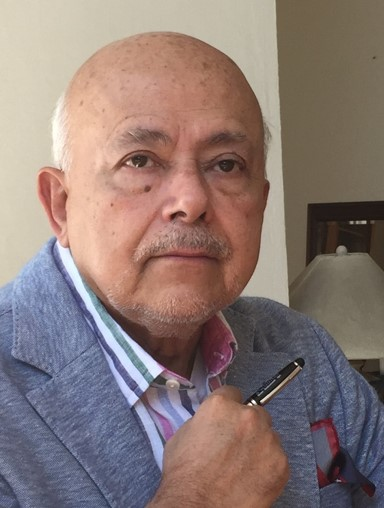

Jorge Ojeda-Castañeda

Resume• B. Sc. (Physics, Cumulative GPA 9.3/10), National Autonomous University of México (1972) • Ph. D. (Applied Optics) Supervisor H. H. Hopkins, Fellow of the Royal Society, J. J. Thomson Lab, University of Reading, United Kingdom (1976) • M. Sc. Management of Technology, (Cumulative GPA 4.7/5), Massachusetts Institute of Technology, USA (2002) • Jorge has written 165 papers in peer-reviewed academic journals, and more than 110 papers in conference proceedings. • He has delivered more than 50 invited talks in International Meetings • He is a member of the editorial boards: -Journal of Optics (Optical Society of India) -Optical Memory and Neural Networks (Allerton Press) • In Google Scholars he is classified as: Citations-------- 3627 h-index-------- 31 i10-index-------- 87 • He has co-edited the following books: -“Phase-Space Optics: Fundamentals and Applications” (McGraw-Hill, 2010) -The Milestone volumes’ SPIE 128 (Zone Plates) & SPIE 181 (Phase-space Optics). -The SPIE Proceedings Vol. 8833 (2013) and Vol. 9142 (2014) -The special number “Phase-Space Optics” in Applied Optics (August 1, 2008) • He is a Fellow member of: -Optical Society of India (OSI, 2006) -Optical Society of America (OSA, 1993) -Society of Photo-Instrumentation Engineers (SPIE, 1991) -Alexander von Humboldt Foundation (1982-1984 & 2004) -The Electromagnetism Academy (MIT; USA, 1989) -Mexican Academy of Science (1985) • Jorge has received the following honors: -Mexican Academy of Optics (AMO) offers an award under his name: “Best Poster, on theoretical Optics, presented by a student (2019). -The Research Award, “Mexican Physical Society” (1994). -Research Award, “Mexican Academy of Optics” (1990). -National Research Fellow, Level III (1988, 1992, 1996, 2004, 2014,2024). -National Research Fellow, Level II (1985-1988). • He has served as: -General director, Instituto Nacional de Astrofísica, Óptica y Electrónica México (1984-1988-1992) -Treasurer, “Optics within Life Science” (1993-1996) -Vice-President of the “International Commission for Optics” (1996-1999-2002) -President, Academia Mexicana de Optica (1996-1998) -Dean of the School of Science, Universidad de las Americas, Mexico (1996-2001) • Currently Jorge is -Full Professor, at the University of Guanajuato, México (2007-2020). |
|---|